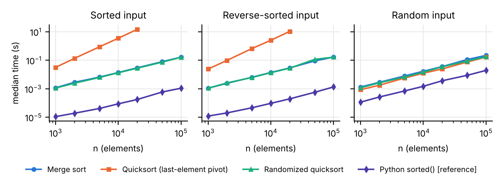
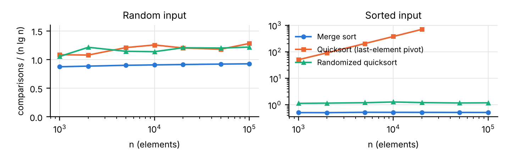
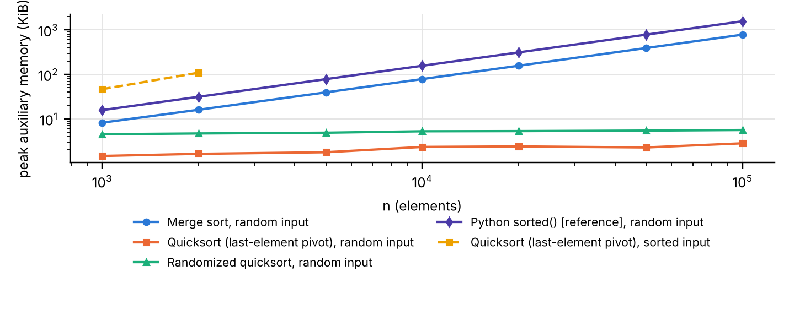

Analyzing and Implementing Divide-and-Conquer Algorithms:
Merge Sort and Quicksort
Jatin Jaiswal
Student ID: [STUDENT ID]
Department of Computer Science, University of the Cumberlands
MSCS 532: Algorithms and Data Structures
Assignment 2
{{DATE}}
Divide-and-conquer algorithms split a problem into smaller instances of itself, solve those recursively, and combine the results (Cormen et al., 2022). This paper analyzes merge sort and quicksort, solves their recurrences, and compares Python implementations of both on sorted, reverse-sorted, and random inputs. Code, raw measurements, and figures are in the GitHub repository at https://github.com/jaiswal29/MSCS532_Assignment2.
Merge sort sorts an array A[p..r] of n comparable keys. Divide: compute the midpoint q = ⌊(p + r)/2⌋. Conquer: recursively sort A[p..q] and A[q+1..r]. Combine: MERGE the two sorted halves in a single left-to-right pass using two temporary arrays. Because MERGE takes the left element on ties, the sort is stable, but it is not in place: the temporaries need Θ(n) extra storage. The inner loop of the implementation (merge_sort.py) is shown below.
{{SNIPPET_MERGE}}
Dividing costs Θ(1), each half has size n/2, and MERGE costs Θ(n), so T(n) = 2T(n/2) + Θ(n), T(1) = Θ(1). Master method: a = b = 2, so nlogb a = n = Θ(f(n)); Case 2 gives T(n) = Θ(n lg n). Recursion tree: level i has 2i nodes of size n/2i, so every level costs cn; with lg n + 1 levels the total is cn lg n + cn = Θ(n lg n). Substitution: guess T(n) ≤ dn lg n; then T(n) ≤ 2d(n/2) lg(n/2) + cn = dn lg n − dn + cn ≤ dn lg n for d ≥ c, and the lower bound T(n) ≥ d′n lg n follows the same way.
The recurrence is independent of input order because MERGE always copies all n elements, so best, average, and worst cases are all Θ(n lg n): merge sort is both O(n lg n) and Ω(n lg n) on every input. Only the comparison count varies, from about (n/2) lg n on sorted input to at most n lg n − n + 1. Since every comparison sort needs Ω(n lg n) comparisons in the worst case (Cormen et al., 2022), merge sort is asymptotically optimal. Its predictability and stability make it the basis of external sorting and of Timsort, the run-exploiting merge sort used by Python and Java (Peters, 2002); its cost is Θ(n) extra memory and the copying that implies.
Quicksort (Hoare, 1962) does its work in the divide step. Divide: PARTITION rearranges A[p..r] around a pivot x so that A[p..q−1] ≤ x = A[q] < A[q+1..r]. Conquer: recursively sort the two sides. Combine: nothing, since the sides are already in their final positions. The textbook PARTITION (quick_sort.py, below) always picks x = A[r]; RANDOMIZED-PARTITION first swaps a uniformly random element into A[r]. Both sort in place.
{{SNIPPET_PARTITION}}
PARTITION costs Θ(n), so a split into sizes k and n − k − 1 gives T(n) = T(k) + T(n − k − 1) + Θ(n). Worst case (k = 0 at every level, exactly what sorted and reverse-sorted input produce with the last-element pivot): T(n) = T(n − 1) + Θ(n). The master method does not apply, since the subproblem is not a constant fraction of n. The recursion tree is a path with costs cn, c(n − 1), …, c, summing to cn(n + 1)/2 = Θ(n2). Substitution with the guess T(n) ≤ dn2 gives d(n − 1)2 + cn = dn2 − (2d − c)n + d ≤ dn2 for d ≥ c, n ≥ 1. Best case (balanced split): T(n) = 2T(n/2) + Θ(n) is the merge-sort recurrence, so the master method (Case 2) and the recursion tree both give Θ(n lg n); any constant-proportion split, even 9-to-1, has depth log10/9 n and is still Θ(n lg n). Expected case with a random pivot: each rank is equally likely, so E[T(n)] = (2/n) Σq=0n−1 E[T(q)] + Θ(n), which substitution solves as O(n lg n); counting comparisons directly, the expectation is 2n ln n + O(n) ≈ 1.39 n lg n (Cormen et al., 2022).
Quicksort is therefore O(n2) and Ω(n lg n), with no single Θ bound covering all inputs: the worst case is Θ(n2), the best case Θ(n lg n), and the randomized version runs in expected Θ(n lg n) on every input, its O(n2) worst case having negligible probability. In practice it is usually the fastest comparison sort: in place, sequential in memory, with a one-comparison, one-swap inner loop (Sedgewick, 1978). Its costs are instability, a stack that can reach depth Θ(n), and a predictable pivot that adversarial input can exploit, which libraries counter with randomization, median-of-three pivots, or introsort's fallback to heapsort.
Both algorithms were implemented in Python {{PYVER}} from the textbook pseudocode (merge_sort.py, quick_sort.py) and verified by unit tests covering textbook examples, edge cases, duplicates, stability, and 200 random checks against sorted(). The harness benchmark.py ran merge sort, deterministic quicksort, randomized quicksort, and, for calibration, the built-in sorted() on sorted, reverse-sorted, and uniformly random integers of {{SIZES}} elements, recording the median wall-clock time of {{TRIALS}} trials (time.perf_counter, garbage collector disabled), the peak memory allocated during the call (tracemalloc; Python Software Foundation, 2025), and the key comparisons from one instrumented run. Deterministic quicksort on sorted and reverse-sorted input was capped at n = {{QCAP}} because of its quadratic time. Measurements were taken on {{PLATFORM}}, {{CPUS}} cores.
sorted() is Timsort in C, a reference point only.
Figure 1 and Table 1 confirm the analysis. Merge sort and randomized quicksort grow at the same rate on all three input orders: doubling n from 50,000 to 100,000 on random data multiplied their times by {{MS_RAND_RATIO}} and {{RQS_RAND_RATIO}}, close to the {{NLGN_RATIO}} of an exact n lg n law and far from the 4 of n2. Deterministic quicksort on sorted and reverse-sorted input doubled from 10,000 to 20,000 elements with factors of {{QS_SORTED_RATIO}} and {{QS_REV_RATIO}}, the 4 predicted by Θ(n2); at n = 20,000 it needed {{QS_SORTED_20K}} s on sorted input versus {{RQS_SORTED_20K}} s for randomized quicksort and {{MS_SORTED_20K}} s for merge sort, a {{QS_VS_RQS_20K}}-fold penalty for a change of pivot rule.

Table 2 and Figure 2 tie the measurements to the constants in the analysis: merge sort used {{MS_RAND_RATIO_C}} n lg n comparisons on random and {{MS_SORTED_RATIO_C}} n lg n on sorted input, within the predicted 0.5 to 1; randomized quicksort used {{RQS_RAND_RATIO_C}} n lg n, approaching 1.39 from below as the −O(n) term predicts; and deterministic quicksort on sorted input performed exactly n(n − 1)/2 = {{QS_SORTED_COMPS_20K}} comparisons.

tracemalloc. The deterministic-quicksort series on sorted input stops at n = 2,000 because tracing every allocation of a Θ(n2) run is prohibitively slow.Memory (Figure 3) also matches theory. Merge sort's peak auxiliary memory grew linearly to {{MS_MEM_100K}} KiB at n = 100,000, about 8 bytes per element, exactly MERGE's two temporary arrays of pointers. Deterministic quicksort on random input needed only {{QS_MEM_RAND_100K}} KiB at that size, the Θ(lg n) stack of an in-place sort, but on sorted input its stack grew with n, from {{QS_MEM_SORTED_1K}} KiB at n = 1,000 to {{QS_MEM_SORTED_2K}} KiB at 2,000, the Θ(n) depth of the degenerate recursion tree.
The analysis does not predict several observations. First, on random input deterministic quicksort was the fastest Python implementation ({{QS_RAND_100K}} s at n = 100,000 versus {{MS_RAND_100K}} s for merge sort) despite about {{QS_OVER_MS_COMPS}} times more comparisons: asymptotic notation hides the constant factors of MERGE, which allocates two lists and copies every element at each of the lg n levels, while PARTITION swaps in place. Second, randomized quicksort was about {{RQS_SLOWER_PCT}}% slower than the deterministic version on random data with slightly fewer comparisons, because each of its Θ(n) partition calls pays for a Python-level random.randint. Third, merge sort was faster on sorted than on random input ({{MS_SORTED_100K}} versus {{MS_RAND_100K}} s) although both are Θ(n lg n): it makes half as many comparisons, all perfectly predictable. Fourth, the built-in sorted() was {{BUILTIN_SPEEDUP_RAND}} times faster than merge sort on random input because it is compiled C, and far faster on sorted input because Timsort merges existing runs in Θ(n) time. Finally, the analysis says nothing about an outright failure: under Python's default recursion limit of 1,000 frames, deterministic quicksort cannot sort even 1,000 already-sorted integers (output below), whereas randomized quicksort handles them easily; Θ(n) stack depth is a correctness problem, not just a cost.
{{RECURSION_DEMO}}
The three recurrence methods agree: merge sort is Θ(n lg n) on every input, and quicksort ranges from Θ(n lg n) with balanced partitions to Θ(n2) without them, randomization making the good case the expected one. The experiments reproduced these growth rates and comparison constants while exposing what the analysis omits: constant factors, the cost of randomization in Python, the speed of compiled code, and a recursion limit that turns a bound into a crash.
Cormen, T. H., Leiserson, C. E., Rivest, R. L., & Stein, C. (2022). Introduction to algorithms (4th ed.). MIT Press.
Hoare, C. A. R. (1962). Quicksort. The Computer Journal, 5(1), 10–16. https://doi.org/10.1093/comjnl/5.1.10
Peters, T. (2002). Timsort description [Source file listsort.txt]. CPython repository. https://github.com/python/cpython/blob/main/Objects/listsort.txt
Python Software Foundation. (2025). tracemalloc — Trace memory allocations. Python 3.13 documentation. https://docs.python.org/3/library/tracemalloc.html
Sedgewick, R. (1978). Implementing Quicksort programs. Communications of the ACM, 21(10), 847–857. https://doi.org/10.1145/359619.359631